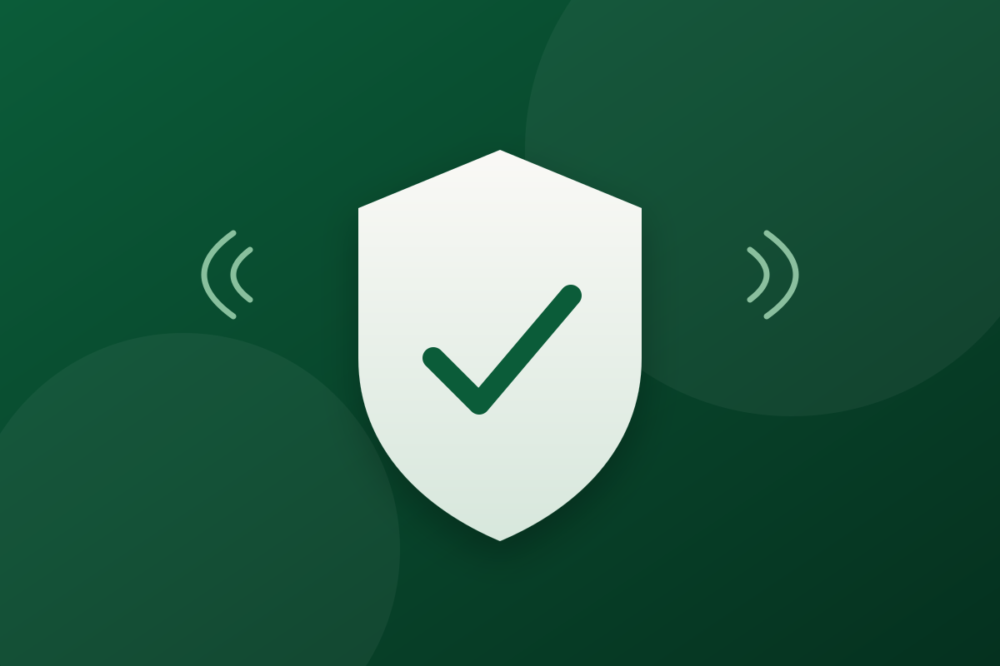
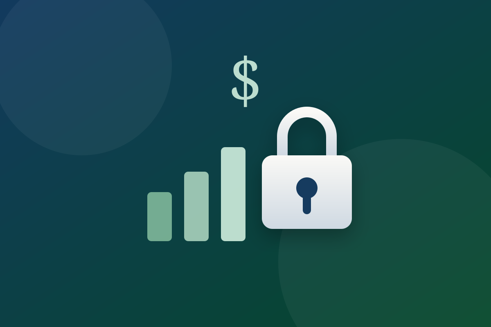
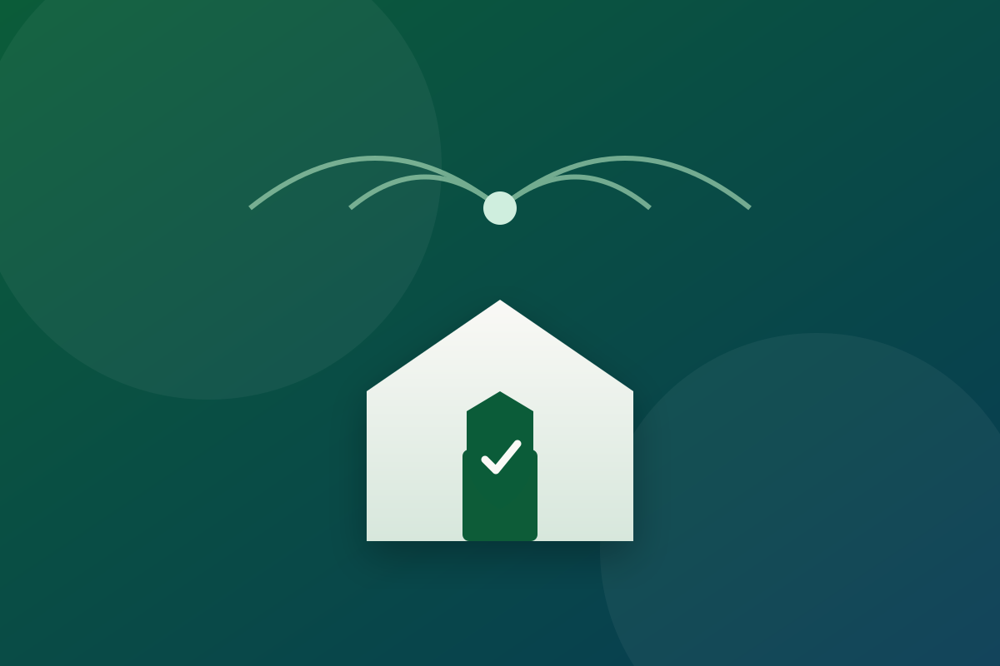

My path into GRC and cybersecurity, one credential at a time. Here's where I am today and what's next.
Currently studying Core 1. On track to certify within ~45 days, with Core 2 to follow. (25%)
Begins after A+. The baseline credential most security and GRC roles look for. (0%)
Builds vendor-neutral foundations that map directly to GRC work. (0%)
The capstone of this roadmap, validating hands-on analyst and GRC capability. (0%)
Three security projects I'm building at the intersection of my work — IT consulting, helping everyday people use technology with confidence, and a background in economics and finance.

A phishing & scam defense kit for the people I already help.
Most of my consulting clients are retirees learning to navigate technology — and they're the exact group scammers target most. SeniorShield turns the lessons I teach one-on-one into a repeatable toolkit: a curated library of real phishing examples, a simple "is this a scam?" decision checklist, and a safe practice inbox where clients can spot red flags without any risk.
It's achievable because it builds on conversations I'm already having, and it's uniquely mine because few security projects are designed around digital confidence for older adults.

Where my economics background meets data protection.
I'm drawn to the intersection of technology, data, and finance, and LedgerLock lives right there. It's a personal-finance security auditor that reviews how sensitive financial data is stored and shared — flagging unencrypted exports, risky account linking, weak password reuse across banking logins, and spreadsheets full of account numbers sitting in plain text.
Think of it as a security checkup for your money trail. It plays to my analytical, finance-minded strengths while keeping the build scoped to a practical, single-user audit tool.

A repeatable security checkup for the homes and small offices I service.
My consulting work already takes me into clients' homes and small businesses, so HomeBase Guard formalizes a security walkthrough I can run on every visit: auditing router defaults and firmware, segmenting smart-home devices onto a guest network, enabling automatic updates, and leaving behind a one-page, jargon-free hardening report the client can actually understand.
It's an easy win to target because the access and trust are already part of my business — this just turns each visit into a measurable security improvement.
Have an idea or want to collaborate? Reach out using the links below.